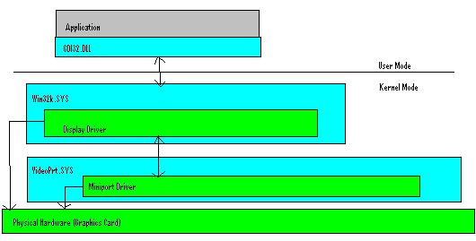
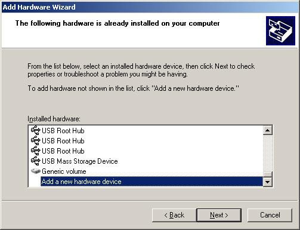
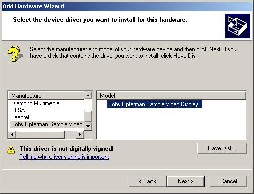
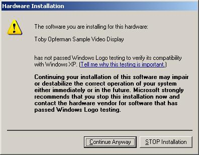

WDM显示类驱动
理论：
本篇我们将介绍下如何写一个简单的显示驱动。显示驱动是一种特殊类型的驱动，必须要满足一个框架，它不像我们前面讲的那些驱动。
示例程序演示了如何写一个简单的显示驱动，这个驱动无需关联任何硬件。它能实现图形到内存，然后由一个应用程序来显示这些图形。
显示驱动的体系结构
首先介绍的是windows NT下显示驱动的体系结构。在这里要特别说明的是windows vista使用了一种新的显示驱动模型，叫做LDDM.它是vista最新桌面窗口管理器的核心部分。就兼容方面，vista仍然可以与老的窗口管理器一起协作支持老的显示驱动。
显示驱动模型包括两部分，迷你小端口驱动和显示驱动。迷你小端口驱动加载到系统空间，负责枚举设备和管理设备资源。显示驱动加载到会话空间，负责实现实际的GDI图形调用。显示驱动完全控制怎样划线或者怎样实现透明效果。
下面的图表显示了windows显示驱动的体系结构。

迷你小端口驱动
迷你小端口驱动加载到系统空间，负责管理显示设备资源和枚举设备。这个驱动使用其它的驱动（VIDEOPRT.SYS）作为它的框架。你的驱动会使用VIDEOPRT.SYS导出的API. 很奇怪驱动可以导出API吧？驱动使用pe格式，也有导入表和导出表。你可以从你的驱动中导出api,并且允许其他驱动链接使用它们，就像调用一个dll一样。实际上你使用的这些API连接着内核和其他驱动。
在这里要注意连接内核模式驱动和用户模式的驱动有些不同。如果一个驱动连接另一个驱动，而那个驱动当前没有加载到内存。那么那个驱动将会被加载进内存，然而那个驱动的DriverEntry不会被调用。DriverEntry自身不会被调用，只有使用ZwLoadDriver加载驱动，系统加载驱动或者使用我们前面展示过的服务api记载驱动才会调用DriverEntry。任何时候，你都可以从一个驱动中导出API,然后在另一个驱动中使用这些api. 在内核中没有类似于"GetProcAddress"的api,你需要自己写一个。
你的迷你小端口驱动会调用VideoPrt.SYS导出的api。VideoPrt.SYS驱动做了很少的事情，其中之一就是实现了通用代码。所以视频驱动的开发者就不需要重新再写同样的代码。这个代码包括在win32子系统（win32k.sys）和你的迷你小端口驱动之间进行视频设备枚举。VideoPrt.SYS还创建了一个显示用的设备对象，当你调用这个初始化例程时，他会使你的驱动对象入口点指向VideoPrt.SYS的。
所有的VideoPrt.SYS API都是"VideoPort"开头的。你第一个调用的API应该是"VideoPortInitialize".如果你注意的话，可以看到开头的两个参数就是传递给你的DriverEntry例程的，他们被称作"Context1"和"Context2"，仿佛你的视频迷你小端口驱动是特别的。不要被这些迷惑，第一参数"Context1"实际上就是你的驱动对象。一旦你传递你的驱动对象给VideoPortInitialize，所有你的驱动入口点都会指向VideoPrt.Sys的。除此之外，你还要传递给VIDEO_HW_INITIALIZATION_DATA结构不同的函数指针，VideoPrt.SYS在需要的时候会用到这些。
这意味着你不要直接处理在视频迷你小端口驱动中的IRP. VideoPrt.SYS会处理他们。你需要处理的是"VRP"（视频请求包），本质上讲它其实是一种简化的用不同数据结构的IRP版本。你需要简单的返回，不需要像IRP那样对这个数据结构进行处理。
在迷你小端口驱动中，你除了使用"VideoPort"开头的api外，由于它是系统层的驱动，你还可以使用内核的api.
由于我们没有任何硬件，因此我们的迷你小端口驱动会比较简单，下面的代码演示了如何编写视频迷你小端口驱动DriverEntry。
/**********************************************************************
*
* DriverEntry
*
* This is the entry point for this video miniport driver
*
**********************************************************************/
ULONG DriverEntry(PVOID pContext1, PVOID pContext2)
{
VIDEO_HW_INITIALIZATION_DATA hwInitData;
VP_STATUS vpStatus;
/*
* The Video Miniport is "technically" restricted to calling
* "Video*" APIs.
* There is a driver that encapsulates this driver by setting your
* driver's entry points to locations in itself. It will then
* handle your IRP's for you and determine which of the entry
* points (provided below) into your driver that should be called.
* This driver however does run in the context of system memory
* unlike the GDI component.
*/
VideoPortZeroMemory(&hwInitData,
sizeof(VIDEO_HW_INITIALIZATION_DATA));
hwInitData.HwInitDataSize = sizeof(VIDEO_HW_INITIALIZATION_DATA);
hwInitData.HwFindAdapter = FakeGfxCard_FindAdapter;
hwInitData.HwInitialize = FakeGfxCard_Initialize;
hwInitData.HwStartIO = FakeGfxCard_StartIO;
hwInitData.HwResetHw = FakeGfxCard_ResetHW;
hwInitData.HwInterrupt = FakeGfxCard_VidInterrupt;
hwInitData.HwGetPowerState = FakeGfxCard_GetPowerState;
hwInitData.HwSetPowerState = FakeGfxCard_SetPowerState;
hwInitData.HwGetVideoChildDescriptor =
FakeGfxCard_GetChildDescriptor;
vpStatus = VideoPortInitialize(pContext1,
pContext2, &hwInitData, NULL);
return vpStatus;
}将VideoPortInitialize的返回值作为DriverEntry函数的返回值，返回调用者。
在你直接简单的传递DriverObject给VideoPrt.SYS之前，你还需要填充一个数据结构，这个数据结构中包含了你驱动中的入口点，这些入口点会被VideoPrt.SYS驱动调用来执行不同的动作。"HwStartIO"是指你可以处理IOCTLs，在显示驱动和视频迷你小端口驱动之间，你可以使用IOCTLs。显示驱动只需要简单调用"EngDeviceIoControl"，迷你小端口驱动中的HwStartIO就会处理IOCTL。代码如下：
/*#pragma alloc_text(PAGE, FakeGfxCard_ResetHW) Cannot be Paged*/
/*#pragma alloc_text(PAGE, FakeGfxCard_VidInterrupt) Cannot be Paged*/
#pragma alloc_text(PAGE, FakeGfxCard_GetPowerState)
#pragma alloc_text(PAGE, FakeGfxCard_SetPowerState)
#pragma alloc_text(PAGE, FakeGfxCard_GetChildDescriptor)
#pragma alloc_text(PAGE, FakeGfxCard_FindAdapter)
#pragma alloc_text(PAGE, FakeGfxCard_Initialize)
#pragma alloc_text(PAGE, FakeGfxCard_StartIO)
/**********************************************************************
* FakeGfxCard_ResetHW
* This routine would reset the hardware when a soft reboot is
* performed. Returning FALSE from this routine would force
* the HAL to perform an INT 10h and set Mode 3 (Text).
* We are not real hardware so we will just return TRUE so the HAL
* does nothing.
**********************************************************************/
BOOLEAN FakeGfxCard_ResetHW(PVOID HwDeviceExtension,
ULONG Columns, ULONG Rows)
{
return TRUE;
}
/*********************************************************************
* FakeGfxCard_VidInterrupt
* Checks if it's adapter generated an interrupt and dismisses it
* or returns FALSE if it did not.
**********************************************************************/
BOOLEAN FakeGfxCard_VidInterrupt(PVOID HwDeviceExtension)
{
return FALSE;
}
/*********************************************************************
* FakeGfxCard_GetPowerState
* Queries if the device can support the requested power state.
**********************************************************************/
VP_STATUS FakeGfxCard_GetPowerState(PVOID HwDeviceExtension,
ULONG HwId, PVIDEO_POWER_MANAGEMENT VideoPowerControl)
{
return NO_ERROR;
}
/**********************************************************************
* FakeGfxCard_SetPowerState
* Sets the power state.
**********************************************************************/
VP_STATUS FakeGfxCard_SetPowerState(PVOID HwDeviceExtension,
ULONG HwId, PVIDEO_POWER_MANAGEMENT VideoPowerControl)
{
return NO_ERROR;
}
/**********************************************************************
*
* FakeGfxCard_GetChildDescriptor
*
* Returns an identifer for any child device supported
* by the miniport.
*
**********************************************************************/
ULONG FakeGfxCard_GetChildDescriptor (PVOID HwDeviceExtension,
PVIDEO_CHILD_ENUM_INFO ChildEnumInfo, PVIDEO_CHILD_TYPE pChildType,
PVOID pChildDescriptor, PULONG pUId, PULONG pUnused)
{
return ERROR_NO_MORE_DEVICES;
}
/**********************************************************************
*
* FakeGfxCard_FindAdapter
*
* This function performs initialization specific to devices
* maintained by this miniport driver.
*
**********************************************************************/
VP_STATUS FakeGfxCard_FindAdapter(PVOID HwDeviceExtension,
PVOID HwContext, PWSTR ArgumentString,
PVIDEO_PORT_CONFIG_INFO ConfigInfo, PUCHAR Again)
{
return NO_ERROR;
}
/**********************************************************************
*
* FakeGfxCard_Initialize
*
* This initializes the device.
*
**********************************************************************/
BOOLEAN FakeGfxCard_Initialize(PVOID HwDeviceExtension)
{
return TRUE;
}
/**********************************************************************
*
* FakeGfxCard_StartIO
*
* This routine executes requests on behalf of the GDI Driver
* and the system. The GDI driver is allowed to issue IOCTLs
* which would then be sent to this routine to be performed
* on it's behalf.
*
* We can add our own proprietary IOCTLs here to be processed
* from the GDI driver.
*
**********************************************************************/
BOOLEAN FakeGfxCard_StartIO(PVOID HwDeviceExtension,
PVIDEO_REQUEST_PACKET RequestPacket)
{
RequestPacket->StatusBlock->Status = 0;
RequestPacket->StatusBlock->Information = 0;
return TRUE;
}由于我没有任何硬件，对于迷你小端口驱动，简单实现就足够了。如果我需要在系统上访问或者执行一个操作，显示驱动靠它自己有限的API函数集是不能做到的。我会用到的唯一的API就是"StartIO"。可是在这个实现中，我们不需要做什么。记住，迷你小端口驱动的主要用途就是枚举硬件设备/资源和管理他们。如果你没有什么硬件设备/资源，那么为了让驱动模型高兴，除了必需的外删除其他的。
显示驱动
显示驱动连接在WIN32K.SYS，仅仅允许调用Eng* APIs，这些api实际上可以在内核模式和用户模式下找到。Nt4之前，显示驱动是在用户模式。无论如何显示驱动和打印驱动都使用同样的api函数集。遵循这个API函数集，只需要很少的工作就能移植显示驱动到用户模式或者内核模式。
显示驱动不是加载到系统内存空间而是在会话空间。会话空间是内核中类似于进程隔离的。如图地址从OxA0000000开始扩展到0xA2FFFFFF是会话空间。在用户模式下，进程有他们自己的虚拟内存地址空间，在内核模式下，会话有他们自己的虚拟内存地址空间。在内核内存中系统空间对所有会话是全局的。
一个会话是一个登录用户的实例，它包含了自己的窗口管理，桌面，shell和应用程序。最显著的就是windows xp的快速用户切换，即你可以在一台机器上登录多个用户。每个用户实际上有一个独有的会话和一个独有的内核内存范围，我们称为会话空间。
当设计一个视频驱动的时候，你会遇到一个问题。就是说，如果你的迷你小端口驱动可能处理的那个内存超出了当前会话上下文，你不能简单地传递任意的内存到你的迷你小端口驱动。这里有个例子传递这个内存给系统进程中的另外的线程来处理。
如果系统进程没有关联你的会话，你将会访问一个不同的内存区域，而不是你想的那样。当这个发生时，你会得到"A driver has not been correctly ported to Terminal Services"这样的蓝屏信息。
显示驱动不象到目前为止我们接触过的驱动那样。但它仍然是pe格式。它不象迷你小端口驱动那样，是一个连接到一个不同框架的正规的内核驱动。它不能直接通过连接到内核而使用内核api，并且由于前面说明的原因也不能使用他们。如果你的api传递的内存超出了会话空间，那么你就会蓝屏，除非你保证你只是传递了系统内存。这是另一个为什么只能使用Eng* API函数集的原因。然而，你可以从迷你小端口驱动请求一个函数指针表，没有什么东西会阻止你这么做。
任何时候，显示驱动同普通驱动相比表现的更像一个dll，实际上它也是被看作是一个dll.这个驱动框架被绑定在WIN32K.SYS上，WIN32K.SYS实现了windows管理器和GDI.这个驱动编译使用"-entry:DrvEnableDriver@12 /SUBSYSTEM:NATIVE"，其中DrvEnableDriver作为显示驱动的入口点。
DrvEnableDriver
DrvEnableDriver是显示驱动的初始入口点。它与DriverEntry没有任何关系。这个API入口参数有一个DRVENABLEDATA结构，这个结构需要使用一个指向驱动入口的函数表来填充。这个表包含了一系列函数指针的索引值和函数指针。其中索引值表示了函数类型，就像"INDEX_DrvCompletePDEV"是指它对应的函数指针是指向驱动中一个DrvCompletePDEV型的处理函数。其中一些API是可选的，但有一些是必须的。
这个入口点为了返回你的函数序列负责。你也可以在这里做一些你需要的初始化动作。下面的代码来自于本文的显示驱动例子。
/*
* Display Drivers provide a list of function entry points for specific GDI
* tasks. These are identified by providing a pre-defined "INDEX" value (pre-
* defined
* by microsoft) followed by the function entry point. There are levels of
* flexibility
* on which ones you are REQUIRED and which ones are technically OPTIONAL.
*
*/
DRVFN g_DrvFunctions[] =
{
{ INDEX_DrvAssertMode, (PFN) GdiExample_DrvAssertMode },
{ INDEX_DrvCompletePDEV, (PFN) GdiExample_DrvCompletePDEV },
{ INDEX_DrvCreateDeviceBitmap, (PFN) GdiExample_DrvCreateDeviceBitmap },
{ INDEX_DrvDeleteDeviceBitmap, (PFN) GdiExample_DrvDeleteDeviceBitmap },
{ INDEX_DrvDestroyFont, (PFN) GdiExample_DrvDestroyFont },
{ INDEX_DrvDisablePDEV, (PFN) GdiExample_DrvDisablePDEV },
{ INDEX_DrvDisableDriver, (PFN) GdiExample_DrvDisableDriver },
{ INDEX_DrvDisableSurface, (PFN) GdiExample_DrvDisableSurface },
{ INDEX_DrvSaveScreenBits, (PFN) GdiExample_DrvSaveScreenBits },
{ INDEX_DrvEnablePDEV, (PFN) GdiExample_DrvEnablePDEV },
{ INDEX_DrvEnableSurface, (PFN) GdiExample_DrvEnableSurface },
{ INDEX_DrvEscape, (PFN) GdiExample_DrvEscape },
{ INDEX_DrvGetModes, (PFN) GdiExample_DrvGetModes },
{ INDEX_DrvMovePointer, (PFN) GdiExample_DrvMovePointer },
{ INDEX_DrvNotify, (PFN) GdiExample_DrvNotify },
// { INDEX_DrvRealizeBrush, (PFN) GdiExample_DrvRealizeBrush },
{ INDEX_DrvResetPDEV, (PFN) GdiExample_DrvResetPDEV },
{ INDEX_DrvSetPalette, (PFN) GdiExample_DrvSetPalette },
{ INDEX_DrvSetPointerShape, (PFN) GdiExample_DrvSetPointerShape },
{ INDEX_DrvStretchBlt, (PFN) GdiExample_DrvStretchBlt },
{ INDEX_DrvSynchronizeSurface, (PFN) GdiExample_DrvSynchronizeSurface },
{ INDEX_DrvAlphaBlend, (PFN) GdiExample_DrvAlphaBlend },
{ INDEX_DrvBitBlt, (PFN) GdiExample_DrvBitBlt },
{ INDEX_DrvCopyBits, (PFN) GdiExample_DrvCopyBits },
{ INDEX_DrvFillPath, (PFN) GdiExample_DrvFillPath },
{ INDEX_DrvGradientFill, (PFN) GdiExample_DrvGradientFill },
{ INDEX_DrvLineTo, (PFN) GdiExample_DrvLineTo },
{ INDEX_DrvStrokePath, (PFN) GdiExample_DrvStrokePath },
{ INDEX_DrvTextOut, (PFN) GdiExample_DrvTextOut },
{ INDEX_DrvTransparentBlt, (PFN) GdiExample_DrvTransparentBlt },
};
ULONG g_ulNumberOfFunctions = sizeof(g_DrvFunctions) / sizeof(DRVFN);
/*********************************************************************
* DrvEnableDriver
*
* This is the initial driver entry point. This is the "DriverEntry"
* equivlent for Display and Printer drivers. This function must
* return a function table that represents all the supported entry
* points into this driver.
*
*********************************************************************/
BOOL DrvEnableDriver(ULONG ulEngineVersion,
ULONG ulDataSize, DRVENABLEDATA *pDrvEnableData)
{
BOOL bDriverEnabled = FALSE;
/*
* We only want to support versions > NT 4
*
*/
if(HIWORD(ulEngineVersion) >= 0x3 &&
ulDataSize >= sizeof(DRVENABLEDATA))
{
pDrvEnableData->iDriverVersion = DDI_DRIVER_VERSION;
pDrvEnableData->pdrvfn = g_DrvFunctions;
pDrvEnableData->c = g_ulNumberOfFunctions;
bDriverEnabled = TRUE;
}
return bDriverEnabled; DrvDisableDriver
当显示驱动卸载时调用这个函数。在这个函数中，你可以执行一些必要的清理工作，清理你在DrvEnableDriver调用中创建的东西。下面的代码来自于例子。
/*********************************************************************
* GdiExample_DrvDisableDriver
*
* This function is used to notify the driver when the driver is
* getting ready to be unloaded.
*
*********************************************************************/
VOID GdiExample_DrvDisableDriver(VOID)
{
/*
* No Clean up To Do
*/
}DrvGetModes
这个API在驱动被加载和使能后调用。他用来查询设备支持的显示模式。这些显示模式式就是在显示属性对话框的设置栏中的使用的。这些显示模式可以被缓存，所以操作系统不需要考虑它们的变化和改变。操作系统相信它是个静态的列表。尽管这个api可能被以不同方式和不同次数来调用。但在极大程度上，他不应该被认为是动态的。
通常这个api被调用两次，第一次是询问需要多大的空间来存储这些显示模式。第二次是使用正确的尺寸调用。下面的代码片段来自于驱动示例，这个驱动只支持640 * 480 * 32。
/*********************************************************************
* GdiExample_DrvGetModes
*
* This API is used to enumerate display modes.
*
* This driver only supports 640x480x32
*
*********************************************************************/
ULONG GdiExample_DrvGetModes(HANDLE hDriver,
ULONG cjSize, DEVMODEW *pdm)
{
ULONG ulBytesWritten = 0, ulBytesNeeded = sizeof(DEVMODEW);
ULONG ulReturnValue;
ENGDEBUGPRINT(0, "GdiExample_DrvGetModes\r\n", NULL);
if(pdm == NULL)
{
ulReturnValue = ulBytesNeeded;
}
else
{
ulBytesWritten = sizeof(DEVMODEW);
memset(pdm, 0, sizeof(DEVMODEW));
memcpy(pdm->dmDeviceName, DLL_NAME, sizeof(DLL_NAME));
pdm->dmSpecVersion = DM_SPECVERSION;
pdm->dmDriverVersion = DM_SPECVERSION;
pdm->dmDriverExtra = 0;
pdm->dmSize = sizeof(DEVMODEW);
pdm->dmBitsPerPel = 32;
pdm->dmPelsWidth = 640;
pdm->dmPelsHeight = 480;
pdm->dmDisplayFrequency = 75;
pdm->dmDisplayFlags = 0;
pdm->dmPanningWidth = pdm->dmPelsWidth;
pdm->dmPanningHeight = pdm->dmPelsHeight;
pdm->dmFields = DM_BITSPERPEL | DM_PELSWIDTH |
DM_PELSHEIGHT | DM_DISPLAYFLAGS |
DM_DISPLAYFREQUENCY;
ulReturnValue = ulBytesWritten;
}
return ulReturnValue;
}DrvEnablePDEV
一旦选定了一种显示模式，这个api就会被调用，它会允许驱动使能”物理设备”。这个API的用途是允许显示驱动创建自己私有的上下文，这个上下文将会被传递给其他的显示入口点。创建私有上下文的原因是一个显示驱动可以管理多个显示设备，使用它可以区分开各个显示设备。这个api的返回值是一个上下文指针或者是显示设备的实例。
选中的显示设置通过DEVMODE参数传递给这个API，然而例子驱动中没有使用这个方法，而是硬编码设置为800 * 600 * 32的显示模式。
这个API除创建一个实例结构外，还必须初始化GDIINFO和DEVINFO这两个数据结构。这些参数是重要的，如果你填写支持某一特征，但实际上并不支持。其副作用就是图形扭曲，甚至是蓝屏。其余两个参数我会在后面提及，他们是hDev和hDriver,参数hDriver实际上是显示驱动的DEVICE_OBJECT，可以用于API,例如：EngDeviceIoControl用它来和迷你小端口驱动通讯。
hDev是GDI的句柄，然而由于hDev是在被创建进程中，实际上这个参数没有用。在保存和使用这个句柄之前，建议等待，直到调用了DrvCompletePDEV。下面的代码来自例子驱动的DrvEnablePDEV。
/*********************************************************************
* GdiExample_DrvEnablePDEV
*
* This function will provide a description of the Physical Device.
* The data returned is a user defined data context to be used as a
* handle for this display device.
*
* The hDriver is a handle to the miniport driver associated with
* this display device. This handle can be used to communicate to
* the miniport through APIs to send things like IOCTLs.
*
*********************************************************************/
DHPDEV GdiExample_DrvEnablePDEV(DEVMODEW *pdm, PWSTR pwszLogAddr,
ULONG cPat, HSURF *phsurfPatterns, ULONG cjCaps,
GDIINFO *pGdiInfo, ULONG cjDevInfo, DEVINFO *pDevInfo,
HDEV hdev, PWSTR pwszDeviceName, HANDLE hDriver)
{
PDEVICE_DATA pDeviceData = NULL;
ENGDEBUGPRINT(0, "GdiExample_DrvEnablePDEV Enter \r\n", NULL);
pDeviceData = (PDEVICE_DATA) EngAllocMem(0,
sizeof(DEVICE_DATA), FAKE_GFX_TAG);
if(pDeviceData)
{
memset(pDeviceData, 0, sizeof(DEVICE_DATA));
memset(pGdiInfo, 0, cjCaps);
memset(pDevInfo, 0, cjDevInfo);
{
pGdiInfo->ulVersion = 0x5000;
pGdiInfo->ulTechnology = DT_RASDISPLAY;
pGdiInfo->ulHorzSize = 0;
pGdiInfo->ulVertSize = 0;
pGdiInfo->ulHorzRes = RESOLUTION_X;
pGdiInfo->ulVertRes = RESOLUTION_Y;
pGdiInfo->ulPanningHorzRes = 0;
pGdiInfo->ulPanningVertRes = 0;
pGdiInfo->cBitsPixel = 8;
pGdiInfo->cPlanes = 4;
pGdiInfo->ulNumColors = 20;
pGdiInfo->ulVRefresh = 1;
pGdiInfo->ulBltAlignment = 1;
pGdiInfo->ulLogPixelsX = 96;
pGdiInfo->ulLogPixelsY = 96;
pGdiInfo->flTextCaps = TC_RA_ABLE;
pGdiInfo->flRaster = 0;
pGdiInfo->ulDACRed = 8;
pGdiInfo->ulDACGreen = 8;
pGdiInfo->ulDACBlue = 8;
pGdiInfo->ulAspectX = 0x24;
pGdiInfo->ulNumPalReg = 256;
pGdiInfo->ulAspectY = 0x24;
pGdiInfo->ulAspectXY = 0x33;
pGdiInfo->xStyleStep = 1;
pGdiInfo->yStyleStep = 1;
pGdiInfo->denStyleStep = 3;
pGdiInfo->ptlPhysOffset.x = 0;
pGdiInfo->ptlPhysOffset.y = 0;
pGdiInfo->szlPhysSize.cx = 0;
pGdiInfo->szlPhysSize.cy = 0;
pGdiInfo->ciDevice.Red.x = 6700;
pGdiInfo->ciDevice.Red.y = 3300;
pGdiInfo->ciDevice.Red.Y = 0;
pGdiInfo->ciDevice.Green.x = 2100;
pGdiInfo->ciDevice.Green.y = 7100;
pGdiInfo->ciDevice.Green.Y = 0;
pGdiInfo->ciDevice.Blue.x = 1400;
pGdiInfo->ciDevice.Blue.y = 800;
pGdiInfo->ciDevice.Blue.Y = 0;
pGdiInfo->ciDevice.AlignmentWhite.x = 3127;
pGdiInfo->ciDevice.AlignmentWhite.y = 3290;
pGdiInfo->ciDevice.AlignmentWhite.Y = 0;
pGdiInfo->ciDevice.RedGamma = 20000;
pGdiInfo->ciDevice.GreenGamma = 20000;
pGdiInfo->ciDevice.BlueGamma = 20000;
pGdiInfo->ciDevice.Cyan.x = 1750;
pGdiInfo->ciDevice.Cyan.y = 3950;
pGdiInfo->ciDevice.Cyan.Y = 0;
pGdiInfo->ciDevice.Magenta.x = 4050;
pGdiInfo->ciDevice.Magenta.y = 2050;
pGdiInfo->ciDevice.Magenta.Y = 0;
pGdiInfo->ciDevice.Yellow.x = 4400;
pGdiInfo->ciDevice.Yellow.y = 5200;
pGdiInfo->ciDevice.Yellow.Y = 0;
pGdiInfo->ciDevice.MagentaInCyanDye = 0;
pGdiInfo->ciDevice.YellowInCyanDye = 0;
pGdiInfo->ciDevice.CyanInMagentaDye = 0;
pGdiInfo->ciDevice.YellowInMagentaDye = 0;
pGdiInfo->ciDevice.CyanInYellowDye = 0;
pGdiInfo->ciDevice.MagentaInYellowDye = 0;
pGdiInfo->ulDevicePelsDPI = 0;
pGdiInfo->ulPrimaryOrder = PRIMARY_ORDER_CBA;
pGdiInfo->ulHTPatternSize = HT_PATSIZE_4x4_M;
pGdiInfo->flHTFlags = HT_FLAG_ADDITIVE_PRIMS;
pGdiInfo->ulHTOutputFormat = HT_FORMAT_32BPP;
*pDevInfo = gDevInfoFrameBuffer;
pDevInfo->iDitherFormat = BMF_32BPP;
}
pDeviceData->pVideoMemory = EngMapFile(L"\\??\\c:\\video.dat",
RESOLUTION_X*RESOLUTION_Y*4, &pDeviceData->pMappedFile);
pDeviceData->hDriver = hDriver;
pDevInfo->hpalDefault = EngCreatePalette(PAL_BITFIELDS,
0, NULL, 0xFF0000, 0xFF00, 0xFF);
}
ENGDEBUGPRINT(0, "GdiExample_DrvEnablePDEV Exit \r\n", NULL);
return (DHPDEV)pDeviceData;
}DrvCompletePDEV
DrvCompletePDEV的调用，是用在DrvEnablePDEV调用之后，用来通知显示驱动，设备对象现在已经完成。仅有的参数是一个私有的在DrvEnablePDEV调用中创建的数据结构和一个指向GDI设备的完成句柄。除非你有更多的初始化要做，否则通常的做法是保存这个gdi句柄，然后继续。下面的代码来自于例子驱动。
/*********************************************************************
* GdiExample_DrvCompletePDEV
*
* This is called to complete the process of enabling the device.
*
*
*********************************************************************/
void GdiExample_DrvCompletePDEV(DHPDEV dhpdev, HDEV hdev)
{
PDEVICE_DATA pDeviceData = (PDEVICE_DATA)dhpdev;
ENGDEBUGPRINT(0, "GdiExample_DrvCompletePDEV Enter \r\n", NULL);
pDeviceData->hdev = hdev;
ENGDEBUGPRINT(0, "GdiExample_DrvCompletePDEV Exit \r\n", NULL);
}DrvDisablePDEV
当这个PDEV不再需要的时候，调用这个api消灭。如果还有一个表面使能，这个API调用之前，需要调用DrvDisableSurface。这个api我们实现得很简单，仅仅是执行了一些清理工作，清理了在创建私有的PDEV结构期间创建的东西。
/*********************************************************************
* GdiExample_DrvDisablePDEV
*
* This is called to disable the PDEV we created.
*
*
*********************************************************************/
void GdiExample_DrvDisablePDEV(DHPDEV dhpdev)
{
PDEVICE_DATA pDeviceData = (PDEVICE_DATA)dhpdev;
UINT dwBytesReturned = 0;
ENGDEBUGPRINT(0, "GdiExample_DrvDisablePDEV\r\n", NULL);
if(pDeviceData->pMappedFile)
{
EngUnmapFile(pDeviceData->pMappedFile);
}
EngFreeMem(dhpdev);
}DrvEnableSurface
这个api是用在PDEV完成以后，用来请求显示驱动创建一个表面。当创建一个表面的时候，注意你可以有两种选择。你可以创建一个由显示驱动管理的表面，也可以创建一个由GDI管理的表面。下面的代码选择一个选项来管理它自己的设备表面。
整个的用途就是定义有一个绘画表面，GDI也能在上面绘制。显示驱动有他们自己的设备表面，因此通常需要管理自己的表面。在做这个事情时，它需要以某种方式来描述这个表面，以使GDI能够理解，并能够在上面绘制。这意味着起始地址甚至是显示程度的定义，作为显示驱动对所有的显示模式一般都不能有线性缓冲。在我们这个例子中，我们使用我们创建的内存映像文件来作为我们的视频内存。
/*********************************************************************
* GdiExample_DrvEnableSurface
*
* This API is used to enable the physical device surface.
*
* You have two choices here.
*
* 1. Driver Manages it's own surface
* EngCreateDeviceSurface - Create the handle
* EngModifySurface - Let GDI Know about the object.
*
* 2. GDI Manages the surface
* EngCreateBitmap - Create a handle in a format that
* GDI Understands
* EngAssociateSurface - Let GDI Know about the object.
*
*
*********************************************************************/
HSURF GdiExample_DrvEnableSurface(DHPDEV dhpdev)
{
HSURF hsurf;
SIZEL sizl;
PDEVICE_DATA pDeviceData = (PDEVICE_DATA)dhpdev;
ENGDEBUGPRINT(0, "GdiExample_DrvEnableSurface\r\n", NULL);
pDeviceData->pDeviceSurface =
(PDEVICE_SURFACE)EngAllocMem(FL_ZERO_MEMORY,
sizeof(DEVICE_SURFACE), FAKE_GFX_TAG);
sizl.cx = 800;
sizl.cy = 600;
hsurf = (HSURF)EngCreateDeviceSurface(
(DHSURF)pDeviceData->pDeviceSurface, sizl, BMF_32BPP);
EngModifySurface(hsurf, pDeviceData->hdev,
HOOK_FILLPATH | HOOK_STROKEPATH | HOOK_LINETO |
HOOK_TEXTOUT | HOOK_BITBLT | HOOK_COPYBITS,
MS_NOTSYSTEMMEMORY, (DHSURF)pDeviceData->pDeviceSurface,
pDeviceData->pVideoMemory, 800*4, NULL);
return(hsurf);
}DrvDisableSurface
调用这个api用来注销在DrvEnableSurface调用中创建的绘画表面。这个在注销PDEV之前调用。下面的代码来自于示例程序。
/*********************************************************************
* GdiExample_DrvDisableSurface
*
* This API is called to disable the GDI Surface.
*
*
*********************************************************************/
void GdiExample_DrvDisableSurface(DHPDEV dhpdev)
{
PDEVICE_DATA pDeviceData = (PDEVICE_DATA)dhpdev;
ENGDEBUGPRINT(0, "GdiExample_DrvDisableSurface\r\n", NULL);
EngDeleteSurface(pDeviceData->hsurf);
pDeviceData->hsurf = NULL;
EngFreeMem(pDeviceData->pDeviceSurface);
pDeviceData->pDeviceSurface = NULL;
}先后顺序
现在，让我们清楚地回顾下的这个步骤：
DrvEnableDriver：加载驱动
DrvGetModes:获取缓冲尺寸，来存放所有支持的显示模式。
DrvGetModes: 得到显示模式
DrvEnablePDEV: 通知显示驱动在DEVMODE数据结构中初始化一个选中的模式，并且返回一个实例句柄。
DrvCompletePDEV: 通知驱动，设备初始化已经完成。
DrvEnableSurface:得到驱动来提供一个绘画表面。
<GDI 调用。。。
DrvDisableSurface: 删除绘画表面
DrvDisablePDEV: 删除实例结构
DrvDisableDriver: 卸载显示驱动
怎样进行绘制？
像"BitBlt"这样的“GDI调用”在你的显示驱动中实际上使用DrvBitBlt。你可能注意到，我们的驱动自身没有实现任何绘画命令。这是因为我们没有硬件来加速绘画特性，所以我决定只是调用WINDOWS提供的，已经在软件中实现的例程。示例中，DrvBitBlt简单的转向EngBitBlt。这些将直接渲染到我们的视频缓冲，这里的视频缓冲，我们使用的是内存映像文件。
你可能对“我怎样从Drv*的调用中得到我的PDEV或者我的表面对象”产生疑惑。好的，传递给这些API的SURFOBJ包含了一个指向表面对象的指针。Dhsurf成员是一个设备创建的提供给SURFOBJ的句柄，用来代表一个设备管理的表面。这个可以通过检查设置于SURFOBJ 上的STYPE_DEVICE标志位来决定。
显示驱动escape codes
前面的设备驱动中，我们知道了使用"DeviceIoControl"可以实现从用户模式应用与驱动程序之间的通讯。对于显示驱动，这也是可以的。然而这里有一点不同，他们不再被叫作"IOCTLs"，他们被称作"Escape Codes"
在用户模式下，你可以使用两种方法中的一种发送"Escape Codes"到显示驱动。第一种是ExtEscape，它可以简单的发送你提供的数据给驱动。你的显示驱动随后将在DrvEscape例程中处理它。
第二种办法是DrawEscape，它可以在你驱动的DrvDrawEscape中处理。不同的是，DrawEscape允许你提供一个包含你的数据的窗口DC和这个窗口的裁剪区域，提供给你的驱动。这允许你简单的实现扩展的绘画命令。你的驱动将通知正确的裁剪区域使这些命令在windows环境中运转正常。
OpenGL支持
在Windows中，通过使用一个可安装用户驱动包（ICD：Installable Client Driver）来实现OpenGL支持,这个概念最初由SGI提出，通过让制造商完全地实现图形管道来提高OpenGL的性能。当OpenGL32.DLL被加载时，它会向视频驱动询问它的ICD，如果有，就会被加载到进程空间，OpenGL的API就是由ICD提供。ICD完全控制着图形管道，因而每个制造商和驱动版本都有不同的实现。
通常的做法是缓冲OpenGL命令，然后使用ExtEscape这个api将他们从缓冲刷新到图形加速卡。ICD包现在是由微软维护的，如果你想为它开发，但它不是免费的。
另有一种支持OpenGL办法是通过小型用户驱动包（MCD：Mini Client Driver）实现的。这是微软最早为提供OpenGL 支持而使用的办法，类似于ICD，但是MCD位于内核中。据我所知这种办法非常慢，没有被任何的驱动制造商使用。
DirectX支持
在XPDM下, GDI驱动通过DrvEnableDirectDraw接口提供了DirectDraw的支持。由微软公司提供的系统元件实现了DirectX图形管道的用户模式部分和一些内核部分。这些API简单的返回一系列回调接口，内核中的DirectDraw层将用来在硬件中执行特殊的动作。
Direct3D通过DrvGetDirectDrawInfo来完成初始化，在DrvGetDirectDrawInfo 中GDI驱动要求支持Direct3D。提供的回调将被调用几次来得到恰当的进入驱动的接口，这些接口实现了Direct3D不同的特征。这些在MSDN中作了描写。
什么是镜像驱动？
镜像驱动并不像字面意思那样，你可以加载一个视频驱动，这个视频驱动镜像另一个显示驱动。他们会收到同他们镜像的显示驱动一样的调用。镜像驱动不支持DrvGetModes，然而如果你实现它，返回的显示模式将会被缓存，你不能动态的改变这些模式。尽管我听说在模式切换上，实现DrvGetModes能帮助加载和卸载显示驱动，但是我没有能得到证实。
为了加载镜像驱动，这个设备的注册表键需要设置"Attach.ToDesktop"的值为1。然后你可以在镜像驱动上使用参数"CDS_UPDATEREGISTRY"调用ChangeDisplaySettingsEx。然后设置你希望切换的显示模式，再在镜像驱动上调用一次ChangeDisplaySettingsEx。
镜像驱动在模式切换时不会完全地卸载。通常如果有绘制表面的引用，驱动将不会卸载。所以，从我的经验来看，得到镜像驱动，为了模式切换，你需要一个应用程序来检测WM_DISPLAYCHANGE消息。你也可以在加载显示驱动后，设置"Attach.ToDesktop“为0。这将有助于你卸载显示驱动，对于WM_DISPLAYCHANGE，你可以仔细检查这个卸载镜像驱动的过程。
如果你希望立即卸载镜像驱动，而不需要显示驱动改变，你需要遵循同加载一样的步骤。设置"Attach.ToDesktop"为0，然后执行"CDS_UPDATEREGISTRY"。然后不带参数再调用"ChangeDisplaySettingsEx"一次来强制卸载。尽管这看上去像是再运行一遍，所有的事情都通过引用显示表面完成。所以如果有对于显示表面显著的引用，驱动将不会被卸载。DDK中镜像驱动的例子没有全部实现这些，有一些缺少部分，正如在加载镜像驱动后，没有实现WM_DISPLAYCHANGE，也没有重新设置"Attach.ToDesktop"为0。
例子
本篇示例驱动在应用程序和显示驱动之间简单共享了一个内存映像文件。显示驱动写图形命令给内存映像文件，应用程序作为监视器执行，每秒钟大约刷新自己70次。尽管这不是是非常有效，但这仅仅是一个例子。显示驱动象一个常规硬件驱动一样的安装，看上去类似于ATI或者NVIDIA驱动。
为了安装这个示例，你需要使用控制面板中的"Add New Hardware" 。你必须选择"Hardware is already installed"和"Manually select hardware from a list"。下面的图片显示了设备列表，你需要滚动到最后，选择"Add a new hardware device"

然后，你选择"Have Disk"找这个工程提供的.INF文件。然后，向下滚动到新的列表，找出如下图所示的"Toby Opferman Sample Video Display"

除非你不想安装这个驱动，不然你会看到下面的对话框，你选择"Continue Anyway"来安装。下一步要做的就是使用显示设置和第三个选项卡激活第二个监视器。运行本篇提供的镜像程序，你会在应用窗口中看到第二个监视器。

结论：
本篇展示了如何创建一个简单的显示驱动来处理GDI命令。本篇提及的显示驱动体系结构仅仅适用于XPDM,不适用于windows vista中新的LDDM.
Introduction
It has been a while since I have updated this series and I have found some free time to write the next version. In this article, we will take a look at how to write a simple display driver. A display driver is a special type of driver which fits into a framework that is unlike what we have talked about so far in this series.
The example driver for this article will show how to write a basic display driver which does not have any hardware associated with it. Instead this display driver will implement graphics to memory and an application will be used to display those graphics. This method was demonstrated in an article I wrote for the C/C++ User's Journalhowever that article was about extending VMWare to support multiple monitors. This article will only be focusing on display drivers themselves and will not use VMWare but require just your local machine.
Display driver architecture
The first place to start is to show the display driver architecture as it is in Windows NT. I will make a comment here that Windows Vista introduces a new display driver model known as LDDM. This is essential in supporting the new Desktop Window Manager however Windows Vista still supports the old display driver model in conjunction with the old Window Manager. This article will not be covering LDDM.
The display driver model consists of two pieces, the miniport driver and the display driver. The miniport driver is loaded into system space and is responsible for enumerating devices and managing device resources. The display driver is loaded into session space and is responsible for implementing the actual GDI graphics calls. The driver is responsible for implementing these calls however it wants which can be done in software or deferred to the graphics card itself. The display driver has full control over how a line is drawn or how a transparency effect is implemented.
The following diagram shows the Windows display driver architecture:

The display miniport
The miniport driver is loaded into system space and is responsible for managing display device resources and enumerating devices. This driver however uses another driver as its framework which is VIDEOPRT.SYS. This driver exports APIs which your driver will link against and use. Surprised a driver can export APIs? Don't be. Drivers use the PE format and have export and import tables. You can export APIs from your driver and allow other drivers to link against them just like a DLL. In fact all the APIs you use you are just linking against the kernel and other drivers.
I will note there is a slight difference between linking against kernel and user mode drivers. If a driver links against a driver that is not currently loaded into memory, that driver will become loaded into memory however the DriverEntry for that driver will not be called. The DriverEntry itself is not called until the driver is directly loaded using ZwLoadDriver, loaded by the system or with the service API as we were shown previously. In any case you can export APIs from one driver and link against and use those APIs from another driver. There is no API to "GetProcAddress" in the kernel so you would need to write one.
In any case, VideoPrt.SYS exports APIs which your miniport driver will call. This driver does a few things one of which is to implement common code so that video driver writers do not need to rewrite the same code. This code includes video device enumeration between the WIN32 subsystem (WIN32K.SYS) and your miniport. The VideoPrt.SYS will also create the device objects for the display and when you call the initialization routine it will thunk your driver object's entry points to point to VideoPrt.SYS!
The VideoPrt.SYS APIs all start with "VideoPort" and the first one you call is "VideoPortInitialize". If you notice the first two arguments are the ones passed into your DriverEntry routine however it simply calls them "Context1" and "Context2" as if your video miniport driver is "special". Don't be fooled, this driver entry is the same as what we worked with before and the first "Context1" is actually your driver object. Once you pass your driver object to VideoPortInitialize all your entry points to your driver are thunked to point to VideoPrt.Sys. Instead you pass in different function pointers in "VIDEO_HW_INITIALIZATION_DATA" which VideoPrt.SYS will call instead when it needs to.
This means that you do not need to directly deal with IRPs in a video miniport. The VideoPrt.SYS will instead handle them, break them down and then determine when you need to be informed about the data. Instead you do deal with what they call "VRP" or "Video Request Packet". This is essentially a mild, broken down version of the IRP in a different data structure. You simply need to return there is no special handling of this data structure as there is with IRPs.
The documentation specifies that you should only use the "VideoPort" APIs in a miniport however since this is also just a regular system level driver you can still link against any kernel API you wish and I have done this before. This is not the case with the display driver itself as we will see later.
Since we do not have any hardware our miniport driver will be pretty thin and easy. The following code shows how the video miniport DriverEntry is constructed:
Hide Shrink  Copy Code
Copy Code
/********************************************************************** * * DriverEntry * * This is the entry point for this video miniport driver * **********************************************************************/ULONG DriverEntry(PVOID pContext1, PVOID pContext2) { VIDEO_HW_INITIALIZATION_DATA hwInitData; VP_STATUS vpStatus;/** The Video Miniport is "technically" restricted to calling * "Video*" APIs. * There is a driver that encapsulates this driver by setting your * driver's entry points to locations in itself. It will then * handle your IRP's for you and determine which of the entry * points (provided below) into your driver that should be called. * This driver however does run in the context of system memory * unlike the GDI component. */VideoPortZeroMemory(&hwInitData,sizeof(VIDEO_HW_INITIALIZATION_DATA)); hwInitData.HwInitDataSize = sizeof(VIDEO_HW_INITIALIZATION_DATA); hwInitData.HwFindAdapter = FakeGfxCard_FindAdapter; hwInitData.HwInitialize = FakeGfxCard_Initialize; hwInitData.HwStartIO = FakeGfxCard_StartIO; hwInitData.HwResetHw = FakeGfxCard_ResetHW; hwInitData.HwInterrupt = FakeGfxCard_VidInterrupt; hwInitData.HwGetPowerState = FakeGfxCard_GetPowerState; hwInitData.HwSetPowerState = FakeGfxCard_SetPowerState; hwInitData.HwGetVideoChildDescriptor = FakeGfxCard_GetChildDescriptor; vpStatus = VideoPortInitialize(pContext1, pContext2, &hwInitData, NULL);return vpStatus; }
I mentioned before you simply pass the DriverObject directly through to the VideoPrt.SYS driver as shown above. You also fill in a data structure which contains entries into your driver which the VideoPrt.SYS driver will call to perform various actions. The "HwStartIO" is where you would handle IOCTLs and you can use IOCTLs between the display driver and the Video Miniport. The display driver would simply call "EngDeviceIoControl" and this IOCTL will be handled in the miniport's HwStartIO.
The following shows how I have implemented the video miniport functions:
Hide Shrink  Copy Code
Copy Code
/*#pragma alloc_text(PAGE, FakeGfxCard_ResetHW) Cannot be Paged*/ /*#pragma alloc_text(PAGE, FakeGfxCard_VidInterrupt) Cannot be Paged*/ #pragma alloc_text(PAGE, FakeGfxCard_GetPowerState)#pragma alloc_text(PAGE, FakeGfxCard_SetPowerState)#pragma alloc_text(PAGE, FakeGfxCard_GetChildDescriptor)#pragma alloc_text(PAGE, FakeGfxCard_FindAdapter)#pragma alloc_text(PAGE, FakeGfxCard_Initialize)#pragma alloc_text(PAGE, FakeGfxCard_StartIO)/********************************************************************** * * FakeGfxCard_ResetHW * * This routine would reset the hardware when a soft reboot is * performed. Returning FALSE from this routine would force * the HAL to perform an INT 10h and set Mode 3 (Text). * * We are not real hardware so we will just return TRUE so the HAL * does nothing. * **********************************************************************/BOOLEAN FakeGfxCard_ResetHW(PVOID HwDeviceExtension, ULONG Columns, ULONG Rows) {return TRUE; } /********************************************************************** * * FakeGfxCard_VidInterrupt * * Checks if it's adapter generated an interrupt and dismisses it * or returns FALSE if it did not. * **********************************************************************/BOOLEAN FakeGfxCard_VidInterrupt(PVOID HwDeviceExtension) {return FALSE; } /********************************************************************** * * FakeGfxCard_GetPowerState * * Queries if the device can support the requested power state. * **********************************************************************/VP_STATUS FakeGfxCard_GetPowerState(PVOID HwDeviceExtension, ULONG HwId, PVIDEO_POWER_MANAGEMENT VideoPowerControl) {return NO_ERROR; } /********************************************************************** * * FakeGfxCard_SetPowerState * * Sets the power state. * **********************************************************************/VP_STATUS FakeGfxCard_SetPowerState(PVOID HwDeviceExtension, ULONG HwId, PVIDEO_POWER_MANAGEMENT VideoPowerControl) {return NO_ERROR; } /********************************************************************** * * FakeGfxCard_GetChildDescriptor * * Returns an identifer for any child device supported * by the miniport. * **********************************************************************/ULONG FakeGfxCard_GetChildDescriptor (PVOID HwDeviceExtension, PVIDEO_CHILD_ENUM_INFO ChildEnumInfo, PVIDEO_CHILD_TYPE pChildType, PVOID pChildDescriptor, PULONG pUId, PULONG pUnused) {return ERROR_NO_MORE_DEVICES; } /********************************************************************** * * FakeGfxCard_FindAdapter * * This function performs initialization specific to devices * maintained by this miniport driver. * **********************************************************************/VP_STATUS FakeGfxCard_FindAdapter(PVOID HwDeviceExtension, PVOID HwContext, PWSTR ArgumentString, PVIDEO_PORT_CONFIG_INFO ConfigInfo, PUCHAR Again) {return NO_ERROR; } /********************************************************************** * * FakeGfxCard_Initialize * * This initializes the device. * **********************************************************************/BOOLEAN FakeGfxCard_Initialize(PVOID HwDeviceExtension) {return TRUE; } /********************************************************************** * * FakeGfxCard_StartIO * * This routine executes requests on behalf of the GDI Driver * and the system. The GDI driver is allowed to issue IOCTLs * which would then be sent to this routine to be performed * on it's behalf. * * We can add our own proprietary IOCTLs here to be processed * from the GDI driver. * **********************************************************************/ BOOLEAN FakeGfxCard_StartIO(PVOID HwDeviceExtension, PVIDEO_REQUEST_PACKET RequestPacket) { RequestPacket->StatusBlock->Status = 0; RequestPacket->StatusBlock->Information = 0return TRUE; }
Since I don't have any hardware I simply implement enough of a miniport to make the system happy. The only possible API I would intend to use would be "StartIO" if I needed to access or perform an operation on the system that the display driver is not capable of doing with its limited API set. However in this implementation there is nothing we need done. Remember, the main purpose of the miniport is to enumerate hardware devices/resources and manage them. If you don't have any then that removes everything but the necessary to keep the driver model happy.
The display driver
The display driver links against WIN32K.SYS and is only allowed to call Eng* APIs. These APIs are actually found in the kernel and in user mode. Prior to NT4 the display drivers were in user mode. In any case the same API set used by display drivers is also used by printer drivers. Conforming to this API set also allows the display driver to be movable to user or kernel with minimal work.
The display driver however is not loaded into system memory but instead session space. Session space is the kernel equivalent of process isolation. In user mode processes have their own virtual memory address space and in the kernel sessions have their own virtual memory address space. System space is the kernel memory which is global to all sessions.
A session is an instance of a logged on user which contains its own Window Manager, Desktop(s), shell and applications. This is most notable in Windows XP "Fast User Switching" in which you can log multiple users onto a single machine. Each user is actually in a unique session with a unique range of kernel memory known as session space.
This can be a problem when designing a video driver. It means you cannot simply pass random memory down to your miniport if your miniport may process that memory outside the context of the current session. This is for example passing this memory to be processed in another thread which could reside in the system process for example.
If the system process is not associated with your session then you will be accessing a different memory range than you think. When this occurs you get the "A driver has not been correctly ported to Terminal Services" blue screen.
The display driver is not anything like the drivers we have worked with so far. It is still in PE format but it is not like the miniport which is a normal kernel driver linking against a different frame work. This driver cannot use kernel APIs by linking directly to them and should not use them for the exact reason specified above. If the API passes the memory outside of session space then you have a blue screen unless you ensure you only pass system memory. This is another reason to only use the Eng* API set however you could request a function pointer table from the miniport driver; nothing actually prevents you from doing so.
In any case the display driver behaves more like a DLL than normal drivers do and it is essentially treated as one. This driver's framework is tied to WIN32K.SYS which implements the Window Manager as well as GDI. This driver is compiled using "-entry:DrvEnableDriver@12 /SUBSYSTEM:NATIVE" where DrvEnableDriver is the entry point for the display driver.
DrvEnableDriver
This is the initial entry point for a display driver and it is not related to DriverEntry in any way. This API passes in a DRVENABLEDATA structure which is to be filled in with a table of functions which are the entries to the driver. The table contains a list which is an index value followed by the function pointer. The index value specifies the function type such as "INDEX_DrvCompletePDEV" which specifies that the function pointer is a pointer to the DrvCompletePDEV handler in the driver. Some APIs are optional and some are required.
This entry point is simply responsible for returning the list of your functions. You may also do any initialization you may need to do here. The following is the code from the sample display driver in this article:
Hide Shrink  Copy Code
Copy Code
/* * Display Drivers provide a list of function entry points for specific GDI * tasks. These are identified by providing a pre-defined "INDEX" value (pre- * defined * by microsoft) followed by the function entry point. There are levels of * flexibility * on which ones you are REQUIRED and which ones are technically OPTIONAL. * */DRVFN g_DrvFunctions[] = { { INDEX_DrvAssertMode, (PFN) GdiExample_DrvAssertMode }, { INDEX_DrvCompletePDEV, (PFN) GdiExample_DrvCompletePDEV }, { INDEX_DrvCreateDeviceBitmap, (PFN) GdiExample_DrvCreateDeviceBitmap }, { INDEX_DrvDeleteDeviceBitmap, (PFN) GdiExample_DrvDeleteDeviceBitmap }, { INDEX_DrvDestroyFont, (PFN) GdiExample_DrvDestroyFont }, { INDEX_DrvDisablePDEV, (PFN) GdiExample_DrvDisablePDEV }, { INDEX_DrvDisableDriver, (PFN) GdiExample_DrvDisableDriver }, { INDEX_DrvDisableSurface, (PFN) GdiExample_DrvDisableSurface }, { INDEX_DrvSaveScreenBits, (PFN) GdiExample_DrvSaveScreenBits }, { INDEX_DrvEnablePDEV, (PFN) GdiExample_DrvEnablePDEV }, { INDEX_DrvEnableSurface, (PFN) GdiExample_DrvEnableSurface }, { INDEX_DrvEscape, (PFN) GdiExample_DrvEscape }, { INDEX_DrvGetModes, (PFN) GdiExample_DrvGetModes }, { INDEX_DrvMovePointer, (PFN) GdiExample_DrvMovePointer }, { INDEX_DrvNotify, (PFN) GdiExample_DrvNotify },//{ INDEX_DrvRealizeBrush, (PFN) GdiExample_DrvRealizeBrush }, { INDEX_DrvResetPDEV, (PFN) GdiExample_DrvResetPDEV }, { INDEX_DrvSetPalette, (PFN) GdiExample_DrvSetPalette }, { INDEX_DrvSetPointerShape, (PFN) GdiExample_DrvSetPointerShape }, { INDEX_DrvStretchBlt, (PFN) GdiExample_DrvStretchBlt }, { INDEX_DrvSynchronizeSurface, (PFN) GdiExample_DrvSynchronizeSurface }, { INDEX_DrvAlphaBlend, (PFN) GdiExample_DrvAlphaBlend }, { INDEX_DrvBitBlt, (PFN) GdiExample_DrvBitBlt }, { INDEX_DrvCopyBits, (PFN) GdiExample_DrvCopyBits }, { INDEX_DrvFillPath, (PFN) GdiExample_DrvFillPath }, { INDEX_DrvGradientFill, (PFN) GdiExample_DrvGradientFill }, { INDEX_DrvLineTo, (PFN) GdiExample_DrvLineTo }, { INDEX_DrvStrokePath, (PFN) GdiExample_DrvStrokePath }, { INDEX_DrvTextOut, (PFN) GdiExample_DrvTextOut }, { INDEX_DrvTransparentBlt, (PFN) GdiExample_DrvTransparentBlt }, }; ULONG g_ulNumberOfFunctions = sizeof(g_DrvFunctions) / sizeof(DRVFN); /********************************************************************* * DrvEnableDriver * * This is the initial driver entry point. This is the "DriverEntry" * equivlent for Display and Printer drivers. This function must * return a function table that represents all the supported entry * points into this driver. * *********************************************************************/BOOL DrvEnableDriver(ULONG ulEngineVersion, ULONG ulDataSize, DRVENABLEDATA *pDrvEnableData) { BOOL bDriverEnabled = FALSE;/** We only want to support versions > NT 4 * */if(HIWORD(ulEngineVersion) = 0x3 && ulDataSize = sizeof(DRVENABLEDATA)) { pDrvEnableData->iDriverVersion = DDI_DRIVER_VERSION; pDrvEnableData->pdrvfn = g_DrvFunctions; pDrvEnableData->c = g_ulNumberOfFunctions; bDriverEnabled = TRUE; }return bDriverEnabled; }
DrvDisableDriver
This function handler is called when the display driver is being unloaded. In this handler you can perform any clean up necessary for what you have created in the DrvEnableDriver call. The following code is from the sample driver:
Hide Copy Code
/********************************************************************* * GdiExample_DrvDisableDriver * * This function is used to notify the driver when the driver is * getting ready to be unloaded. * *********************************************************************/VOID GdiExample_DrvDisableDriver(VOID) {/** No Clean up To Do */ }
DrvGetModes
The API called after the driver is loaded and enabled is DrvGetModes. This API is used to query the modes supported by the device. These modes are used to populate the "Settings" tab in the "Display Properties" dialog. The modes can be cached so the operating system does not think of them as being dynamic and changing. The operating system believes this to be a static list and while there are times and ways that this API may be called more than once for the most part it should not be considered dynamic.
The API is generally called twice the first time it simply asks for the size required to store the modes and the second time it calls with the correct size. The following code fragment is from the sample driver which only supports 640x480x32:
Hide Shrink  Copy Code
Copy Code
/********************************************************************* * GdiExample_DrvGetModes * * This API is used to enumerate display modes. * * This driver only supports 640x480x32 * *********************************************************************/ ULONG GdiExample_DrvGetModes(HANDLE hDriver, ULONG cjSize, DEVMODEW *pdm) { ULONG ulBytesWritten = 0, ulBytesNeeded = sizeof(DEVMODEW); ULONG ulReturnValue; ENGDEBUGPRINT(0, "GdiExample_DrvGetModes\r\n", NULL);if(pdm == NULL) { ulReturnValue = ulBytesNeeded; }else { ulBytesWritten = sizeof(DEVMODEW); memset(pdm, 0, sizeof(DEVMODEW)); memcpy(pdm->dmDeviceName, DLL_NAME, sizeof(DLL_NAME)); pdm->dmSpecVersion = DM_SPECVERSION; pdm->dmDriverVersion = DM_SPECVERSION; pdm->dmDriverExtra = 0; pdm->dmSize = sizeof(DEVMODEW); pdm->dmBitsPerPel = 32; pdm->dmPelsWidth = 640; pdm->dmPelsHeight = 480; pdm->dmDisplayFrequency = 75; pdm->dmDisplayFlags = 0; pdm->dmPanningWidth = pdm->dmPelsWidth; pdm->dmPanningHeight = pdm->dmPelsHeight; pdm->dmFields = DM_BITSPERPEL | DM_PELSWIDTH | DM_PELSHEIGHT | DM_DISPLAYFLAGS | DM_DISPLAYFREQUENCY; ulReturnValue = ulBytesWritten; }return ulReturnValue; }
DrvEnablePDEV
Once a mode is chosen this API is then called which will allow the driver to enable the "physical device". The purpose of this API is to allow the display driver to create its own private context which will be passed into the other display entry points. The reason for this private context is that a single display driver may handle multiple display devices and as such would need to distinguish one display device from another. The return value for this API is a pointer to the context or instance of the supplied display device.
The selected display setting is passed into this API via the DEVMODE parameter however the sample driver does not use this method since it's hard coded to setup 800x600x32 mode only.
This API aside from creating an instance structure must also initialize the GDIINFO and DEVINFO data structures at a minimum. These parameters are important as if you fill in supporting a certain feature and you really do not you can have graphic corruption as a side effect or even blue screen. The next two parameters that I will mention are the hDev and hDriver parameters. The hDriver parameter is actually the DEVICE_OBJECT for the display driver and can be used with APIs such as EngDeviceIoControl to communicate with the miniport driver.
The hDev is the handle to GDI however since the device is in the process of being created it is actually useless. It is recommended that you wait until the DrvCompletePDEV call before saving and using this handle. The following code is from the sample driver's DrvEnablePDEV:
Hide Shrink  Copy Code
Copy Code
/********************************************************************* * GdiExample_DrvEnablePDEV * * This function will provide a description of the Physical Device. * The data returned is a user defined data context to be used as a * handle for this display device. * * The hDriver is a handle to the miniport driver associated with * this display device. This handle can be used to communicate to * the miniport through APIs to send things like IOCTLs. * *********************************************************************/ DHPDEV GdiExample_DrvEnablePDEV(DEVMODEW *pdm, PWSTR pwszLogAddr, ULONG cPat, HSURF *phsurfPatterns, ULONG cjCaps, GDIINFO *pGdiInfo, ULONG cjDevInfo, DEVINFO *pDevInfo, HDEV hdev, PWSTR pwszDeviceName, HANDLE hDriver) { PDEVICE_DATA pDeviceData = NULL; ENGDEBUGPRINT(0, "GdiExample_DrvEnablePDEV Enter \r\n", NULL); pDeviceData = (PDEVICE_DATA) EngAllocMem(0,sizeof(DEVICE_DATA), FAKE_GFX_TAG);if(pDeviceData) { memset(pDeviceData, 0, sizeof(DEVICE_DATA)); memset(pGdiInfo, 0, cjCaps); memset(pDevInfo, 0, cjDevInfo); { pGdiInfo->ulVersion = 0x5000; pGdiInfo->ulTechnology = DT_RASDISPLAY; pGdiInfo->ulHorzSize = 0; pGdiInfo->ulVertSize = 0; pGdiInfo->ulHorzRes = RESOLUTION_X; pGdiInfo->ulVertRes = RESOLUTION_Y; pGdiInfo->ulPanningHorzRes = 0; pGdiInfo->ulPanningVertRes = 0; pGdiInfo->cBitsPixel = 8; pGdiInfo->cPlanes = 4; pGdiInfo->ulNumColors = 20; pGdiInfo->ulVRefresh = 1; pGdiInfo->ulBltAlignment = 1; pGdiInfo->ulLogPixelsX = 96; pGdiInfo->ulLogPixelsY = 96; pGdiInfo->flTextCaps = TC_RA_ABLE; pGdiInfo->flRaster = 0; pGdiInfo->ulDACRed = 8; pGdiInfo->ulDACGreen = 8; pGdiInfo->ulDACBlue = 8; pGdiInfo->ulAspectX = 0x24; pGdiInfo->ulNumPalReg = 256; pGdiInfo->ulAspectY = 0x24; pGdiInfo->ulAspectXY = 0x33; pGdiInfo->xStyleStep = 1; pGdiInfo->yStyleStep = 1; pGdiInfo->denStyleStep = 3; pGdiInfo->ptlPhysOffset.x = 0; pGdiInfo->ptlPhysOffset.y = 0; pGdiInfo->szlPhysSize.cx = 0; pGdiInfo->szlPhysSize.cy = 0; pGdiInfo->ciDevice.Red.x = 6700; pGdiInfo->ciDevice.Red.y = 3300; pGdiInfo->ciDevice.Red.Y = 0; pGdiInfo->ciDevice.Green.x = 2100; pGdiInfo->ciDevice.Green.y = 7100; pGdiInfo->ciDevice.Green.Y = 0; pGdiInfo->ciDevice.Blue.x = 1400; pGdiInfo->ciDevice.Blue.y = 800; pGdiInfo->ciDevice.Blue.Y = 0; pGdiInfo->ciDevice.AlignmentWhite.x = 3127; pGdiInfo->ciDevice.AlignmentWhite.y = 3290; pGdiInfo->ciDevice.AlignmentWhite.Y = 0; pGdiInfo->ciDevice.RedGamma = 20000; pGdiInfo->ciDevice.GreenGamma = 20000; pGdiInfo->ciDevice.BlueGamma = 20000; pGdiInfo->ciDevice.Cyan.x = 1750; pGdiInfo->ciDevice.Cyan.y = 3950; pGdiInfo->ciDevice.Cyan.Y = 0; pGdiInfo->ciDevice.Magenta.x = 4050; pGdiInfo->ciDevice.Magenta.y = 2050; pGdiInfo->ciDevice.Magenta.Y = 0; pGdiInfo->ciDevice.Yellow.x = 4400; pGdiInfo->ciDevice.Yellow.y = 5200; pGdiInfo->ciDevice.Yellow.Y = 0; pGdiInfo->ciDevice.MagentaInCyanDye = 0; pGdiInfo->ciDevice.YellowInCyanDye = 0; pGdiInfo->ciDevice.CyanInMagentaDye = 0; pGdiInfo->ciDevice.YellowInMagentaDye = 0; pGdiInfo->ciDevice.CyanInYellowDye = 0; pGdiInfo->ciDevice.MagentaInYellowDye = 0; pGdiInfo->ulDevicePelsDPI = 0; pGdiInfo->ulPrimaryOrder = PRIMARY_ORDER_CBA; pGdiInfo->ulHTPatternSize = HT_PATSIZE_4x4_M; pGdiInfo->flHTFlags = HT_FLAG_ADDITIVE_PRIMS; pGdiInfo->ulHTOutputFormat = HT_FORMAT_32BPP; *pDevInfo = gDevInfoFrameBuffer; pDevInfo->iDitherFormat = BMF_32BPP; } pDeviceData->pVideoMemory = EngMapFile(L"\\??\\c:\\video.dat", RESOLUTION_X*RESOLUTION_Y*4, &pDeviceData->pMappedFile); pDeviceData->hDriver = hDriver; pDevInfo->hpalDefault = EngCreatePalette(PAL_BITFIELDS,0, NULL, 0xFF0000, 0xFF00, 0xFF); } ENGDEBUGPRINT(0, "GdiExample_DrvEnablePDEV Exit \r\n", NULL);return (DHPDEV)pDeviceData; }
DrvCompletePDEV
This call is made after the enable to notify the display driver that the device object is now completed. The only parameters are the private data structure created in the enable call and the completed handle to the GDI device. Unless you have more initialization to do you generally can just save the GDI handle and move on. The following is the code from the sample driver:
Hide Copy Code
/********************************************************************* * GdiExample_DrvCompletePDEV * * This is called to complete the process of enabling the device. * * *********************************************************************/ void GdiExample_DrvCompletePDEV(DHPDEV dhpdev, HDEV hdev) { PDEVICE_DATA pDeviceData = (PDEVICE_DATA)dhpdev; ENGDEBUGPRINT(0, "GdiExample_DrvCompletePDEV Enter \r\n", NULL); pDeviceData->hdev = hdev; ENGDEBUGPRINT(0, "GdiExample_DrvCompletePDEV Exit \r\n", NULL); }
DrvDisablePDEV
This API is called when the PDEV is no longer needed and will be destroyed. This is called after DrvDisableSurface if there is a surface enabled. Our implementation of this API is very simple and will just perform some clean up of what was created during the creation of the private PDEV structure:
Hide Copy Code
/********************************************************************* * GdiExample_DrvDisablePDEV * * This is called to disable the PDEV we created. * * *********************************************************************/ void GdiExample_DrvDisablePDEV(DHPDEV dhpdev) { PDEVICE_DATA pDeviceData = (PDEVICE_DATA)dhpdev; UINT dwBytesReturned = 0; ENGDEBUGPRINT(0, "GdiExample_DrvDisablePDEV\r\n", NULL);if(pDeviceData->pMappedFile) { EngUnmapFile(pDeviceData->pMappedFile); } EngFreeMem(dhpdev); }
DrvEnableSurface
This API is called after the PDEV has completed to ask the display driver to create a surface. Also as noted in the comments below you have two choices when creating a surface. You can create a surface in which the display driver will manage it or you can create one in which GDI will manage for you. The following code chose the option of managing its own device surface.
The entire purpose is to define a drawing surface in which GDI will also be able to draw onto. Display drivers have their own device surfaces and thus will generally want to manage its surface. In doing this it must describe the surface in a way which GDI can understand and be able to draw on it. This means defining the start address and even the pitch as display drivers do not generally have linear buffers for all modes. In our case we use the memory mapped file we created to be our video memory:
Hide Shrink  Copy Code
Copy Code
/********************************************************************* * GdiExample_DrvEnableSurface * * This API is used to enable the physical device surface. * * You have two choices here. * * 1. Driver Manages it's own surface * EngCreateDeviceSurface - Create the handle * EngModifySurface - Let GDI Know about the object. * * 2. GDI Manages the surface * EngCreateBitmap - Create a handle in a format that * GDI Understands * EngAssociateSurface - Let GDI Know about the object. * * *********************************************************************/ HSURF GdiExample_DrvEnableSurface(DHPDEV dhpdev) { HSURF hsurf; SIZEL sizl; PDEVICE_DATA pDeviceData = (PDEVICE_DATA)dhpdev; ENGDEBUGPRINT(0, "GdiExample_DrvEnableSurface\r\n", NULL); pDeviceData->pDeviceSurface = (PDEVICE_SURFACE)EngAllocMem(FL_ZERO_MEMORY,sizeof(DEVICE_SURFACE), FAKE_GFX_TAG); sizl.cx = 800; sizl.cy = 600; hsurf = (HSURF)EngCreateDeviceSurface( (DHSURF)pDeviceData->pDeviceSurface, sizl, BMF_32BPP); EngModifySurface(hsurf, pDeviceData->hdev, HOOK_FILLPATH | HOOK_STROKEPATH | HOOK_LINETO | HOOK_TEXTOUT | HOOK_BITBLT | HOOK_COPYBITS, MS_NOTSYSTEMMEMORY, (DHSURF)pDeviceData->pDeviceSurface, pDeviceData->pVideoMemory, 800*4, NULL);return(hsurf); }
DrvDisableSurface
This API is called to destroy the drawing surface created in the DrvEnableSurface call. This is called before destroying the PDEV. The following is the code from the example program:
Hide Copy Code
/********************************************************************* * GdiExample_DrvDisableSurface * * This API is called to disable the GDI Surface. * * *********************************************************************/ void GdiExample_DrvDisableSurface(DHPDEV dhpdev) { PDEVICE_DATA pDeviceData = (PDEVICE_DATA)dhpdev; ENGDEBUGPRINT(0, "GdiExample_DrvDisableSurface\r\n", NULL); EngDeleteSurface(pDeviceData->hsurf); pDeviceData->hsurf = NULL; EngFreeMem(pDeviceData->pDeviceSurface); pDeviceData->pDeviceSurface = NULL; }
Sequencing
So, let's go through this one more time for clarity.
DrvEnableDriver: The driver is loaded.
DrvGetModes: Get the buffer size to hold all supported display modes.
DrvGetModes: Get the display modes.
DrvEnablePDEV: Inform the display driver to initialize to a mode selected in the DEVMODE data structure and return an instance handle.
DrvCompletePDEV: Inform the driver that the device initialization is complete.
DrvEnableSurface: Get the driver to supply a drawing surface.
<GDI Calls>
DrvDisableSurface: Destroy the drawing surface.
DrvDisablePDEV: Destroy the instance structure.
DrvDisableDriver: Unload the display driver.
So how does the drawing work?
The "GDI Calls" are essentially handling things like "BitBlt" in your display driver which is actually in DrvBitBlt. You may notice that with our driver it doesn't implement any graphical commands itself. This is because we do not have hardware to accelerate drawing features and I decided that it's a lot less work to just call the routines provided to you by Windows that already implement these features in software. As in the example, DrvBitBlt can simply be diverted to EngBitBlt. These will simply render directly to our video buffer which in our case is a memory mapped file.
You may be wondering "how do I get to my PDEV or my surface object from these Drv* calls". Well, the SURFOBJpassed into these APIs does contain a pointer to the surface object. These are found at the dhsurf and dhpdevmembers of the SURFOBJ structure. The dhsurf member is the handle the device created provided the SURFOBJrepresents a device managed surface. This can be determined by checking the STYPE_DEVICE flag set on the SURFOBJ.
Display driver escape codes
In my tutorials on device drivers we learned that it is possible to use "DeviceIoControl" from user mode to implement and communicate our own commands between the application and the driver. This is also possible with display drivers however it is a little different and instead of being called "IOCTLs" they are called "Escape Codes".
In user mode you can send "Escape Codes" to the display driver using one of two methods. The first is ExtEscape which simply sends the data you provide to the driver. Your display driver would then handle this in its DrvEscape routine.
The second method is DrawEscape which can be handled in DrvDrawEscape in your driver. The difference is that DrawEscape allows you to provide a Window DC with your data and the clipping for that window will be provided to your driver. This allows you to easily implement extended drawing commands which can behave correctly in the windowing environment as your driver will be informed of the proper clipping area.
OpenGL support
OpenGL support is done through the use of an "ICD" or "Installable Client Driver". This is a concept originally created by SGI to help improve the performance of OpenGL on Windows by letting the vendor implement the graphics pipeline completely. When OpenGL32.DLL gets loaded it simply asks the video driver for it's ICD and if there is one it's loaded into the process space and OpenGL APIs are serviced by the ICD. The ICD is in full control of the graphics pipeline and thus each vendor and driver version may have a different implementation.
The usual case is to buffer the OpenGL commands and flush them to the card using the ExtEscape API. The ICD kit is now maintained by Microsoft and it is not free if you wish to develop for it.
The other method of supporting OpenGL is through something called a "Mini Client Driver" or "MCD". This is Microsoft's original method for OpenGL support and is similar to an ICD but the MCD lives in the kernel. This method is not used by any driver vendor that I know of and is very slow which is the reason for the ICD implementation.
DirectX support
In XPDM, Direct Draw support is done in the GDI driver. This is through the DrvEnableDirectDraw interface. The user mode portion and some of the kernel for the DirectX graphics pipeline is implemented by Microsoft supplied system components. The API will simply return back a list of callback interfaces the DirectDraw layer in the kernel will use to perform specific actions in the hardware.
Direct3D is initialized through the DrvGetDirectDrawInfo in which the GDI driver will claim to support Direct3D. The supplied callbacks will be called several times to get the appropriate interfaces into the driver which implement the various features of Direct3D. This is described on MSDN.
What is a mirror driver?
A mirror driver is a not well documented feature in which you can load a video driver that will "mirror" another display driver. That is they will receive the same calls as the display driver they are mirroring. A mirror driver is documented to not support DrvGetModes however if you do implement it the returned modes will be cached and you cannot dynamically change the modes. Although I have heard that implementing DrvGetModes can help with loading and unloading the display driver on mode switches I was unable to get this to work.
To load a mirror driver the registry key for this device needs to set the "Attach.ToDesktop" value to 1 and then you call ChangeDisplaySettingsEx with "CDS_UPDATEREGISTRY" on the mirror driver. You then set the mode you wish to switch to and call ChangeDisplaySettingsEx again on the mirror driver.
The mirror driver does not properly unload at mode switch and generally if there are references to a drawing surface the driver will not unload. So, in my experience to get a mirror driver to mode switch you need an application that will detect WM_DISPLAYCHANGE messages. You also need to set "Attach.ToDesktop" to 0 after you load the display driver. This will help unload the display driver and on WM_DISPLAYCHANGE you can then go through the procedure to unload the mirror driver.
If you wish to immediately unload the mirror driver without a display change you simply need to follow the same steps as what loaded it. Set "Attach.ToDesktop" to 0 and then perform the "CDS_UPDATEREGISTRY". You can then call "ChangeDisplaySettingsEx" again with no parameters to force unloading. Although this seems to work again everything is done by referencing the display surface so if there are outstanding references to the display surface the driver will not be unloaded. The mirror driver sample in the DDK does not do all of this and has some missing pieces such as not implementing the WM_DISPLAYCHANGE and not resetting the "Attach.ToDesktop" value after loading the mirror driver.
The example
The example driver in this article simply shares a memory mapped file between an application and the display driver. The display driver will write graphics commands to the memory mapped file and the application simply acts as a monitor and will just refresh itself ~70 times a second. This is not efficient but it is just an example. The display driver is installed as a regular hardware driver and is seen just as an ATI or NVIDIA driver would be.
To install the example you will simply need to use the "Add New Hardware" wizard in the control panel. You must select "Hardware is already installed" and "Manually select hardware from a list". The following picture shows the list of devices for which you scroll down to the bottom and select "Add a new hardware device":

Then you simply want to select "Have Disk" and find the .INF file that is provided with this project. You will then need to scroll down this new list and find "Toby Opferman Sample Video Display" as shown in the following picture:

You will see the following dialog when installing just select "Continue Anyway" unless you do not want to install the driver. The next thing you do is just enable the second monitor using the display settings and the third tab. Run the application monitor program provided with this article and you will be shown the second monitor in that application window:

Homework
Reading and seeing is a good way to learn however I believe you learn more if you actually try and do something! What I want you to do is take my example and add more display modes! This will require changes to the application and you can either attempt to make the application detect these display changes through various methods including WM_DISPLAYCHANGE or simply require the user to restart the application and prompt or enumerate devices to get the new display settings and adjust the window appropriately.
Here is a little hint. When a new mode is selected you do not always get a DrvDisableSurface, DrvDisablePDEV, then a DrvEnablePDEV on the new setting. You may instead get a DrvAssertMode. This is called to switch one PDEV to another as this API passes in a BOOL to inform the driver to enable or disable the supplied PDEV.
Conclusion
This article showed how to create a very basic display driver to handle GDI commands. The display driver architecture mentioned in the article only covered XPDM and not the new LDDM as found in Windows Vista. This is also essentially the extreme basics of "where to get started". Even so hopefully you have learned a little something about display drivers and the Windows operating system.